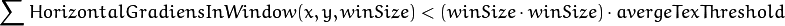

Camera Calibration and 3D Reconstruction¶
gpu::StereoBM_GPU¶
-
class
gpu::StereoBM_GPU¶
Class computing stereo correspondence (disparity map) using the block matching algorithm.
class StereoBM_GPU
{
public:
enum { BASIC_PRESET = 0, PREFILTER_XSOBEL = 1 };
enum { DEFAULT_NDISP = 64, DEFAULT_WINSZ = 19 };
StereoBM_GPU();
StereoBM_GPU(int preset, int ndisparities = DEFAULT_NDISP,
int winSize = DEFAULT_WINSZ);
void operator() (const GpuMat& left, const GpuMat& right,
GpuMat& disparity, Stream& stream = Stream::Null());
static bool checkIfGpuCallReasonable();
int preset;
int ndisp;
int winSize;
float avergeTexThreshold;
...
};
The class also performs pre- and post-filtering steps: Sobel pre-filtering (if PREFILTER_XSOBEL flag is set) and low textureness filtering (if averageTexThreshols > 0 ). If avergeTexThreshold = 0 , low textureness filtering is disabled. Otherwise, the disparity is set to 0 in each point (x, y) , where for the left image

This means that the input left image is low textured.
Note
- A basic stereo matching example can be found at opencv_source_code/samples/gpu/stereo_match.cpp
- A stereo matching example using several GPU’s can be found at opencv_source_code/samples/gpu/stereo_multi.cpp
- A stereo matching example using several GPU’s and driver API can be found at opencv_source_code/samples/gpu/driver_api_stereo_multi.cpp
gpu::StereoBM_GPU::StereoBM_GPU¶
Enables gpu::StereoBM_GPU constructors.
-
C++:
gpu::StereoBM_GPU::StereoBM_GPU()¶
-
C++:
gpu::StereoBM_GPU::StereoBM_GPU(int preset, int ndisparities=DEFAULT_NDISP, int winSize=DEFAULT_WINSZ)¶ Parameters: - preset –
Parameter presetting:
- BASIC_PRESET Basic mode without pre-processing.
- PREFILTER_XSOBEL Sobel pre-filtering mode.
- ndisparities – Number of disparities. It must be a multiple of 8 and less or equal to 256.
- winSize – Block size.
- preset –
gpu::StereoBM_GPU::operator ()¶
Enables the stereo correspondence operator that finds the disparity for the specified rectified stereo pair.
-
C++:
gpu::StereoBM_GPU::operator()(const GpuMat& left, const GpuMat& right, GpuMat& disparity, Stream& stream=Stream::Null())¶ Parameters: - left – Left image. Only
CV_8UC1type is supported. - right – Right image with the same size and the same type as the left one.
- disparity – Output disparity map. It is a
CV_8UC1image with the same size as the input images. - stream – Stream for the asynchronous version.
- left – Left image. Only
gpu::StereoBM_GPU::checkIfGpuCallReasonable¶
Uses a heuristic method to estimate whether the current GPU is faster than the CPU in this algorithm. It queries the currently active device.
-
C++:
gpu::StereoBM_GPU::checkIfGpuCallReasonable()¶
gpu::StereoBeliefPropagation¶
-
class
gpu::StereoBeliefPropagation¶
Class computing stereo correspondence using the belief propagation algorithm.
class StereoBeliefPropagation
{
public:
enum { DEFAULT_NDISP = 64 };
enum { DEFAULT_ITERS = 5 };
enum { DEFAULT_LEVELS = 5 };
static void estimateRecommendedParams(int width, int height,
int& ndisp, int& iters, int& levels);
explicit StereoBeliefPropagation(int ndisp = DEFAULT_NDISP,
int iters = DEFAULT_ITERS,
int levels = DEFAULT_LEVELS,
int msg_type = CV_32F);
StereoBeliefPropagation(int ndisp, int iters, int levels,
float max_data_term, float data_weight,
float max_disc_term, float disc_single_jump,
int msg_type = CV_32F);
void operator()(const GpuMat& left, const GpuMat& right,
GpuMat& disparity, Stream& stream = Stream::Null());
void operator()(const GpuMat& data, GpuMat& disparity, Stream& stream = Stream::Null());
int ndisp;
int iters;
int levels;
float max_data_term;
float data_weight;
float max_disc_term;
float disc_single_jump;
int msg_type;
...
};
The class implements algorithm described in [Felzenszwalb2006] . It can compute own data cost (using a truncated linear model) or use a user-provided data cost.
Note
StereoBeliefPropagation requires a lot of memory for message storage:

and for data cost storage:

width_step is the number of bytes in a line including padding.
gpu::StereoBeliefPropagation::StereoBeliefPropagation¶
Enables the gpu::StereoBeliefPropagation constructors.
-
C++:
gpu::StereoBeliefPropagation::StereoBeliefPropagation(int ndisp=DEFAULT_NDISP, int iters=DEFAULT_ITERS, int levels=DEFAULT_LEVELS, int msg_type=CV_32F)¶
-
C++:
gpu::StereoBeliefPropagation::StereoBeliefPropagation(int ndisp, int iters, int levels, float max_data_term, float data_weight, float max_disc_term, float disc_single_jump, int msg_type=CV_32F)¶ Parameters: - ndisp – Number of disparities.
- iters – Number of BP iterations on each level.
- levels – Number of levels.
- max_data_term – Threshold for data cost truncation.
- data_weight – Data weight.
- max_disc_term – Threshold for discontinuity truncation.
- disc_single_jump – Discontinuity single jump.
- msg_type – Type for messages.
CV_16SC1andCV_32FC1types are supported.
StereoBeliefPropagation uses a truncated linear model for the data cost and discontinuity terms:

For more details, see [Felzenszwalb2006].
By default, gpu::StereoBeliefPropagation uses floating-point arithmetics and the CV_32FC1 type for messages. But it can also use fixed-point arithmetics and the CV_16SC1 message type for better performance. To avoid an overflow in this case, the parameters must satisfy the following requirement:

gpu::StereoBeliefPropagation::estimateRecommendedParams¶
Uses a heuristic method to compute the recommended parameters ( ndisp, iters and levels ) for the specified image size ( width and height ).
-
C++:
gpu::StereoBeliefPropagation::estimateRecommendedParams(int width, int height, int& ndisp, int& iters, int& levels)¶
gpu::StereoBeliefPropagation::operator ()¶
Enables the stereo correspondence operator that finds the disparity for the specified rectified stereo pair or data cost.
-
C++:
gpu::StereoBeliefPropagation::operator()(const GpuMat& left, const GpuMat& right, GpuMat& disparity, Stream& stream=Stream::Null())¶
-
C++:
gpu::StereoBeliefPropagation::operator()(const GpuMat& data, GpuMat& disparity, Stream& stream=Stream::Null())¶ Parameters: - left – Left image.
CV_8UC1,CV_8UC3andCV_8UC4types are supported. - right – Right image with the same size and the same type as the left one.
- data – User-specified data cost, a matrix of
msg_typetype andSize(<image columns>*ndisp, <image rows>)size. - disparity – Output disparity map. If
disparityis empty, the output type isCV_16SC1. Otherwise, the type is retained. - stream – Stream for the asynchronous version.
- left – Left image.
gpu::StereoConstantSpaceBP¶
-
class
gpu::StereoConstantSpaceBP¶
Class computing stereo correspondence using the constant space belief propagation algorithm.
class StereoConstantSpaceBP
{
public:
enum { DEFAULT_NDISP = 128 };
enum { DEFAULT_ITERS = 8 };
enum { DEFAULT_LEVELS = 4 };
enum { DEFAULT_NR_PLANE = 4 };
static void estimateRecommendedParams(int width, int height,
int& ndisp, int& iters, int& levels, int& nr_plane);
explicit StereoConstantSpaceBP(int ndisp = DEFAULT_NDISP,
int iters = DEFAULT_ITERS,
int levels = DEFAULT_LEVELS,
int nr_plane = DEFAULT_NR_PLANE,
int msg_type = CV_32F);
StereoConstantSpaceBP(int ndisp, int iters, int levels, int nr_plane,
float max_data_term, float data_weight,
float max_disc_term, float disc_single_jump,
int min_disp_th = 0,
int msg_type = CV_32F);
void operator()(const GpuMat& left, const GpuMat& right,
GpuMat& disparity, Stream& stream = Stream::Null());
int ndisp;
int iters;
int levels;
int nr_plane;
float max_data_term;
float data_weight;
float max_disc_term;
float disc_single_jump;
int min_disp_th;
int msg_type;
bool use_local_init_data_cost;
...
};
The class implements algorithm described in [Yang2010]. StereoConstantSpaceBP supports both local minimum and global minimum data cost initialization algorithms. For more details, see the paper mentioned above. By default, a local algorithm is used. To enable a global algorithm, set use_local_init_data_cost to false .
gpu::StereoConstantSpaceBP::StereoConstantSpaceBP¶
Enables the gpu::StereoConstantSpaceBP constructors.
-
C++:
gpu::StereoConstantSpaceBP::StereoConstantSpaceBP(int ndisp=DEFAULT_NDISP, int iters=DEFAULT_ITERS, int levels=DEFAULT_LEVELS, int nr_plane=DEFAULT_NR_PLANE, int msg_type=CV_32F)¶
-
C++:
gpu::StereoConstantSpaceBP::StereoConstantSpaceBP(int ndisp, int iters, int levels, int nr_plane, float max_data_term, float data_weight, float max_disc_term, float disc_single_jump, int min_disp_th=0, int msg_type=CV_32F)¶ Parameters: - ndisp – Number of disparities.
- iters – Number of BP iterations on each level.
- levels – Number of levels.
- nr_plane – Number of disparity levels on the first level.
- max_data_term – Truncation of data cost.
- data_weight – Data weight.
- max_disc_term – Truncation of discontinuity.
- disc_single_jump – Discontinuity single jump.
- min_disp_th – Minimal disparity threshold.
- msg_type – Type for messages.
CV_16SC1andCV_32FC1types are supported.
StereoConstantSpaceBP uses a truncated linear model for the data cost and discontinuity terms:
For more details, see [Yang2010].
By default, StereoConstantSpaceBP uses floating-point arithmetics and the CV_32FC1 type for messages. But it can also use fixed-point arithmetics and the CV_16SC1 message type for better performance. To avoid an overflow in this case, the parameters must satisfy the following requirement:
gpu::StereoConstantSpaceBP::estimateRecommendedParams¶
Uses a heuristic method to compute parameters (ndisp, iters, levelsand nrplane) for the specified image size (widthand height).
-
C++:
gpu::StereoConstantSpaceBP::estimateRecommendedParams(int width, int height, int& ndisp, int& iters, int& levels, int& nr_plane)¶
gpu::StereoConstantSpaceBP::operator ()¶
Enables the stereo correspondence operator that finds the disparity for the specified rectified stereo pair.
-
C++:
gpu::StereoConstantSpaceBP::operator()(const GpuMat& left, const GpuMat& right, GpuMat& disparity, Stream& stream=Stream::Null())¶ Parameters: - left – Left image.
CV_8UC1,CV_8UC3andCV_8UC4types are supported. - right – Right image with the same size and the same type as the left one.
- disparity – Output disparity map. If
disparityis empty, the output type isCV_16SC1. Otherwise, the output type isdisparity.type(). - stream – Stream for the asynchronous version.
- left – Left image.
gpu::DisparityBilateralFilter¶
-
class
gpu::DisparityBilateralFilter¶
Class refining a disparity map using joint bilateral filtering.
class CV_EXPORTS DisparityBilateralFilter
{
public:
enum { DEFAULT_NDISP = 64 };
enum { DEFAULT_RADIUS = 3 };
enum { DEFAULT_ITERS = 1 };
explicit DisparityBilateralFilter(int ndisp = DEFAULT_NDISP,
int radius = DEFAULT_RADIUS, int iters = DEFAULT_ITERS);
DisparityBilateralFilter(int ndisp, int radius, int iters,
float edge_threshold, float max_disc_threshold,
float sigma_range);
void operator()(const GpuMat& disparity, const GpuMat& image,
GpuMat& dst, Stream& stream = Stream::Null());
...
};
The class implements [Yang2010] algorithm.
gpu::DisparityBilateralFilter::DisparityBilateralFilter¶
Enables the gpu::DisparityBilateralFilter constructors.
-
C++:
gpu::DisparityBilateralFilter::DisparityBilateralFilter(int ndisp=DEFAULT_NDISP, int radius=DEFAULT_RADIUS, int iters=DEFAULT_ITERS)¶
-
C++:
gpu::DisparityBilateralFilter::DisparityBilateralFilter(int ndisp, int radius, int iters, float edge_threshold, float max_disc_threshold, float sigma_range)¶ Parameters: - ndisp – Number of disparities.
- radius – Filter radius.
- iters – Number of iterations.
- edge_threshold – Threshold for edges.
- max_disc_threshold – Constant to reject outliers.
- sigma_range – Filter range.
gpu::DisparityBilateralFilter::operator ()¶
Refines a disparity map using joint bilateral filtering.
-
C++:
gpu::DisparityBilateralFilter::operator()(const GpuMat& disparity, const GpuMat& image, GpuMat& dst, Stream& stream=Stream::Null())¶ Parameters: - disparity – Input disparity map.
CV_8UC1andCV_16SC1types are supported. - image – Input image.
CV_8UC1andCV_8UC3types are supported. - dst – Destination disparity map. It has the same size and type as
disparity. - stream – Stream for the asynchronous version.
- disparity – Input disparity map.
gpu::drawColorDisp¶
Colors a disparity image.
-
C++:
gpu::drawColorDisp(const GpuMat& src_disp, GpuMat& dst_disp, int ndisp, Stream& stream=Stream::Null())¶ Parameters: - src_disp – Source disparity image.
CV_8UC1andCV_16SC1types are supported. - dst_disp – Output disparity image. It has the same size as
src_disp. The type isCV_8UC4inBGRAformat (alpha = 255). - ndisp – Number of disparities.
- stream – Stream for the asynchronous version.
- src_disp – Source disparity image.
This function draws a colored disparity map by converting disparity values from [0..ndisp) interval first to HSV color space (where different disparity values correspond to different hues) and then converting the pixels to RGB for visualization.
gpu::reprojectImageTo3D¶
Reprojects a disparity image to 3D space.
-
C++:
gpu::reprojectImageTo3D(const GpuMat& disp, GpuMat& xyzw, const Mat& Q, int dst_cn=4, Stream& stream=Stream::Null())¶ Parameters: - disp – Input disparity image.
CV_8UandCV_16Stypes are supported. - xyzw – Output 3- or 4-channel floating-point image of the same size as
disp. Each element ofxyzw(x,y)contains 3D coordinates(x,y,z)or(x,y,z,1)of the point(x,y), computed from the disparity map. - Q –
 perspective transformation matrix that can be obtained via
perspective transformation matrix that can be obtained via stereoRectify(). - dst_cn – The number of channels for output image. Can be 3 or 4.
- stream – Stream for the asynchronous version.
- disp – Input disparity image.
See also
gpu::solvePnPRansac¶
Finds the object pose from 3D-2D point correspondences.
-
C++:
gpu::solvePnPRansac(const Mat& object, const Mat& image, const Mat& camera_mat, const Mat& dist_coef, Mat& rvec, Mat& tvec, bool use_extrinsic_guess=false, int num_iters=100, float max_dist=8.0, int min_inlier_count=100, vector<int>* inliers=NULL)¶ Parameters: - object – Single-row matrix of object points.
- image – Single-row matrix of image points.
- camera_mat – 3x3 matrix of intrinsic camera parameters.
- dist_coef – Distortion coefficients. See
undistortPoints()for details. - rvec – Output 3D rotation vector.
- tvec – Output 3D translation vector.
- use_extrinsic_guess – Flag to indicate that the function must use
rvecandtvecas an initial transformation guess. It is not supported for now. - num_iters – Maximum number of RANSAC iterations.
- max_dist – Euclidean distance threshold to detect whether point is inlier or not.
- min_inlier_count – Flag to indicate that the function must stop if greater or equal number of inliers is achieved. It is not supported for now.
- inliers – Output vector of inlier indices.
See also
| [Felzenszwalb2006] | (1, 2) Pedro F. Felzenszwalb algorithm [Pedro F. Felzenszwalb and Daniel P. Huttenlocher. Efficient belief propagation for early vision. International Journal of Computer Vision, 70(1), October 2006 |
| [Yang2010] | (1, 2, 3)
|
Help and Feedback
You did not find what you were looking for?- Ask a question on the Q&A forum.
- If you think something is missing or wrong in the documentation, please file a bug report.

Table Of Contents
- Camera Calibration and 3D Reconstruction
- gpu::StereoBM_GPU
- gpu::StereoBM_GPU::StereoBM_GPU
- gpu::StereoBM_GPU::operator ()
- gpu::StereoBM_GPU::checkIfGpuCallReasonable
- gpu::StereoBeliefPropagation
- gpu::StereoBeliefPropagation::StereoBeliefPropagation
- gpu::StereoBeliefPropagation::estimateRecommendedParams
- gpu::StereoBeliefPropagation::operator ()
- gpu::StereoConstantSpaceBP
- gpu::StereoConstantSpaceBP::StereoConstantSpaceBP
- gpu::StereoConstantSpaceBP::estimateRecommendedParams
- gpu::StereoConstantSpaceBP::operator ()
- gpu::DisparityBilateralFilter
- gpu::DisparityBilateralFilter::DisparityBilateralFilter
- gpu::DisparityBilateralFilter::operator ()
- gpu::drawColorDisp
- gpu::reprojectImageTo3D
- gpu::solvePnPRansac